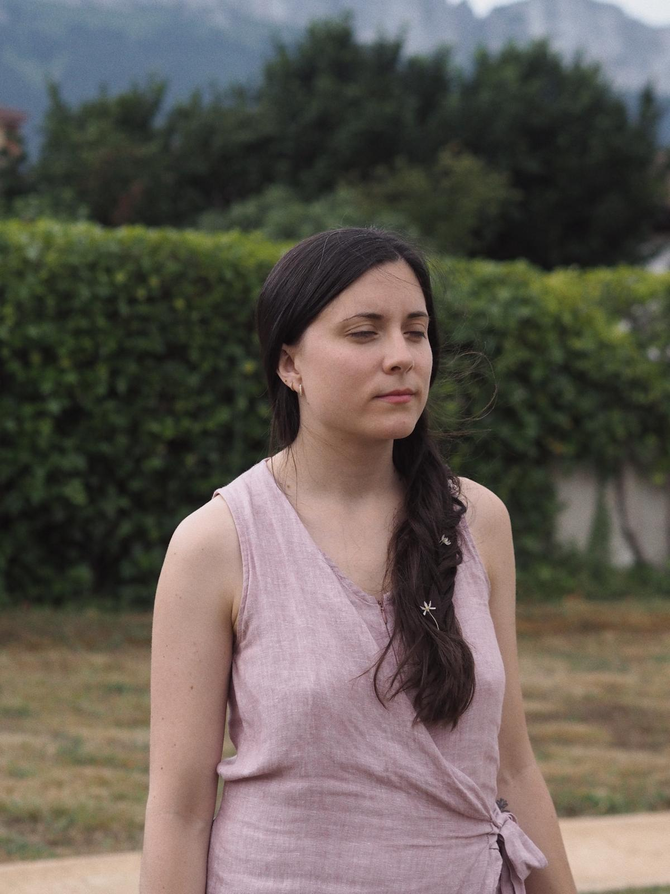
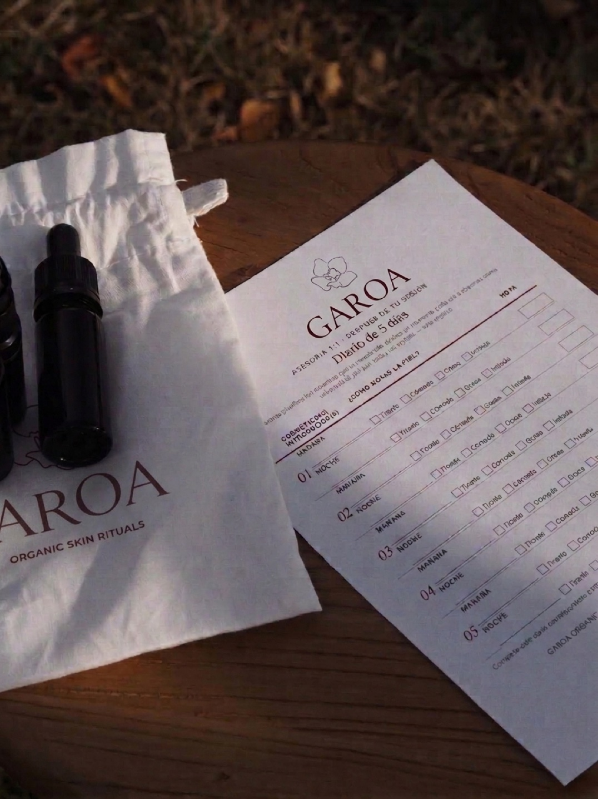

Llevas tiempo buscando el producto correcto.
Puede que lo que tu piel necesite sea que alguien sepa leerla.

la sesión
Al reservar
Completas un test breve de tu piel — tipo, hábitos, ciclo, objetivos — y firmas el consentimiento de protección de datos. Así llego a nuestra cita conociéndote ya un poco, y podemos dedicar el tiempo juntas a lo que de verdad importa.
Videollamada de 45 minutos
Repasamos juntas lo que me has contado en el test, resolvemos cualquier duda, y hago el diagnóstico real de tu piel — qué le pasa y por qué. Sin prisa, sin interrogatorio: una conversación.
escrito
Tu ritual por escrito
Después de la sesión, recibes tu ritual personalizado por escrito: rutina AM y PM paso a paso, productos concretos de cosmética natural, marcas, orden de aplicación, frecuencia y el porqué científico de cada decisión. Un documento que es tuyo para consultar siempre que lo necesites.
1 y 2
Pruebas tu ritual nuevo
Te envío muestras de los productos recomendados y, durante las dos primeras semanas, pruebas la rutina completa en tu piel. Los primeros cinco días registras cómo responde en un diario de observación, y tienes seguimiento por mensajería para cualquier duda. Así vemos qué funciona de verdad antes de que compres los productos completos.
Videollamada de ajuste
En la última semana, una videollamada de 30 minutos para revisar cómo ha respondido tu piel y afinar lo que no esté funcionando: cambiar un producto, ajustar una frecuencia, resolver una reacción. Sales con tu ritual definitivo por escrito.

Esto es para ti si
- Llevas tiempo probando productos sin resultados claros
- Tu piel ha cambiado y no sabes cómo adaptarte
- Quieres entender lo que le pasa, no solo taparlo
- Estás dispuesta a apostar por cosmética natural y consciente
Esto no es para ti si
- Buscas recomendaciones de cosmética convencional
- Quieres resultados inmediatos sin proceso
- No estás dispuesta a simplificar tu rutina
 Lo que dicen
Lo que dicen
Sarai ofrece un trato cercano y personalizado, recomendándote los productos más adecuados para tu tipo de piel y teniendo en cuenta el momento vital en el que te encuentras. Se nota que sabe de lo que habla y que se preocupa por encontrar lo que realmente necesitas.
Gracias a esta asesoría tengo una rutina sencilla de seguir, que se adapta a las necesidades de mi piel, con productos naturales que cuidan de mi piel y de mi salud. Destaco su trato cercano y que haya tenido la paciencia de explicarme todos los pasos y para qué sirve cada producto.
Estoy encantada con la experiencia. Una asesoría cercana, respetuosa y muy detallista. Ha acertado de lleno con lo que necesitaba. Se nota el cariño que pone en todo. ¡Totalmente recomendable!
Llevo dos días haciendo el ritual de mañana y de tarde y ya he notado el cambio en mi piel. Está muchísimo más suave, no me voy a la cama con sensación de tener demasiado producto en la piel y encima la rutina es sencilla. Los productos se nota que son de muy buena calidad.
Después de probar muchas cosas, de gastar mucho dinero en cremas, he entendido que lo que hace brillar la piel es dedicar tiempo a entenderla en su esencia. He obtenido los resultados que buscaba desde hace años. ¡Ahora hasta me apetece desmaquillarme!
Precio
350€
Servicio de 3 semanas. Disponible para clientas en Península y Baleares.
Videollamada de diagnóstico · Protocolo escrito · Muestras · Videollamada de ajuste
Esta asesoría trabaja exclusivamente con cosmética natural y, si es posible, orgánica. Al apuntarte, confirmas que estás dispuesta a construir tu rutina desde este enfoque. No se recomiendan productos de cosmética convencional.
Si al terminar las 3 semanas tu piel necesita algún ajuste adicional, podemos programar sesiones extra de 30 minutos (80€ por sesión), con seguimiento por mensajería incluido hasta la siguiente sesión.